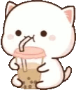
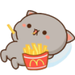
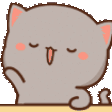
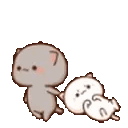
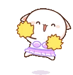
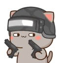
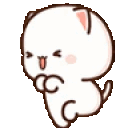
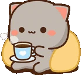
 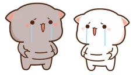
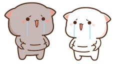
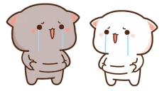
Q: How old is Metaphor?
A: 28.
Q: Where is Metaphor from?
A: Saskatchewan, Canada.
Q: Does he still play league?
A: Yes. He gets challenger every year, at the end of the year.
Q: Why does he not play tournaments?
A: He doesn't want to. There is no point in playing competitive against controller players when he can play for fun in solos.
Q: Why does he melee the zipline?
A: No reason, stylepoints/fun.
Q: How does he cancel animation before/after zip?
A: Jump before getting on zip and again right before hitting the top.
Q: What perks is he running?
A: Mountaineer, Spotter, Quick fix, High alert.
Q: Where can I find his playlist?
A: Spotify - Youtube
Q: Does he use VPN/does he geofence?
A: No. Never has, never will. Geofencing is cheating which Metaphor does not condone.
Q: Does he play other games than Warzone?
A: Yes, sometimes. He will usually stream it on his alt Twitch account.
Q: What are his thoughts on other streamers?
A: He focuses on himself only.
Q: How can I see emotes like "fatbruhSit" and "Awaregi"?
A: You need an extension/plugin like BetterTTV and enable 7tv emotes.